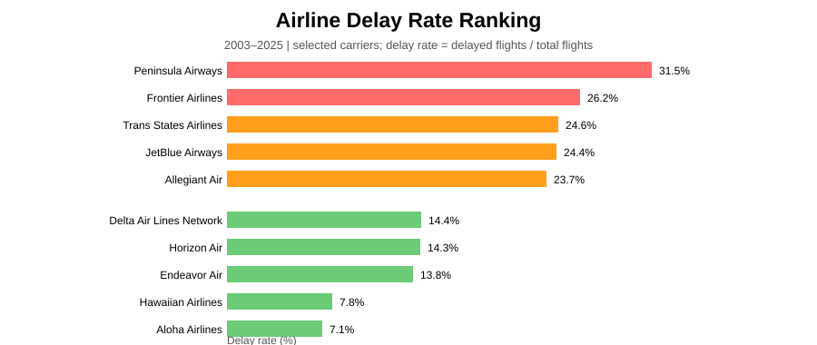
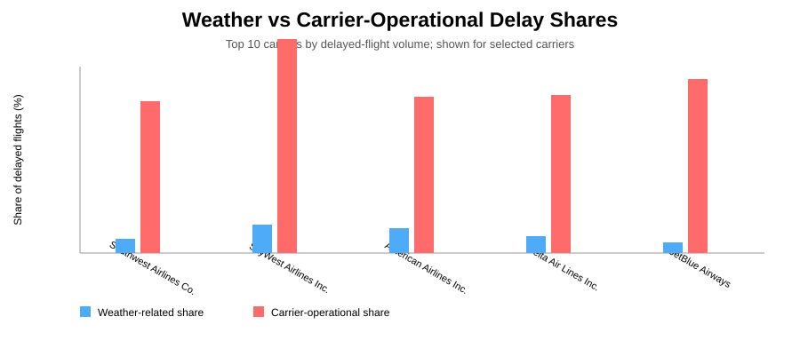

About me
I am developing practical skills in Python data analysis, reproducible research, visualization, and technical communication. My project work focuses on turning a clear research question into documented code, readable charts, and evidence-based recommendations.
Technical skills
- Python, pandas, NumPy, and Jupyter Notebook
- Data cleaning, aggregation, and exploratory analysis
- Matplotlib and Seaborn visualization
- Git, GitHub, GitHub Pages, and technical documentation
Featured project
U.S. Domestic Flight Delay Pattern Analysis
Research question: What drives U.S. domestic flight delays — carriers, airports, time of year, or causal factors?
Status: Completed
Approach
I used BTS airline on-time data covering June 2003 to January 2025. After cleaning missing operational values and calculating delay-rate metrics, I compared carriers, airports, months, and causal factors. The analysis code and reproducible instructions are available in the project repository.

Key findings
- Overall delay rate: 19.2%
- Best-performing carrier: Aloha Airlines, 7.1%
- Highest overall carrier delay rate: Peninsula Airways, 31.5%; among carriers with more than 10,000 flights, Frontier Airlines is highest at 26.2%
- Highest-delay airport: Unalaska, 37.1%
- Carrier-operational issues account for about 29.5% of delays; direct weather delays account for about 3.6%
- September is the most reliable month (14.9%) and June is the least reliable (23.1%)
Monthly pattern

Airport risk

Delay causes

Limitation
The analysis uses monthly aggregated records, so it shows associations and rankings rather than proving passenger-level causality. Historical delay patterns also may not generalize to future airline schedules or weather conditions.